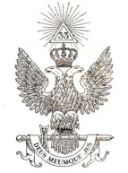

Rito Escocês Antigo e Aceito  O rito escocês antigo e aceito, R∴E∴A∴A∴ ou simplesmente Rito Escocês, é um dos vários Ritos maçónicos. Um rito maçônico é um conjunto de especificações e preceitos utilizados para se praticar os rituais maçónicos. Eles descrevem a ritualística, procedimentos, listam os sinais, toques, palavras e demais instruções secretas ao público geral. Os ensinamentos dos ritos são dados em sequência, divididos em graus. Cada grau traz ensinamentos e cerimoniais próprios. O Rito Escocês tem trinta e três graus. Por ser o rito mais utilizado no Brasil, o senso comum o vê como único modelo de maçonaria. Mas há outros ritos (mais de duzentos) com quantidades diferentes de graus. Os trinta e três graus do rito são alcançados em diferentes corpos maçônicos. Os três primeiros graus nas Lojas Simbólicas, são os graus de Aprendiz, Companheiro e Mestre. Tais graus estão presentes em todos os ritos que são regulados pelos Grandes Orientes e Grandes Lojas. E os graus superiores ou altos graus, do quarto ao trigésimo terceiro, são alcançados nas Lojas de Perfeição, Capítulos, conselhos de Kadosh e Consistórios de Príncipes do Real Segredo, que são jurisdicionados aos Supremos Conselhos. No geral é um rito ecumênico, com a finalidade inter-religiosa "semelhante ao sincretismo teísta mas independente de religião". Ligado ao Antigo Testamento e à lenda de Hiram, lenda base da Maçonaria simbólica, julga-se que alguns dos ritos descritos eram praticados por outras ordens "secretas" ou "esotéricas" existentes na França como os Martinistas, os Illuminati e os Rosa-Cruz na Alemanha, e na Escócia como a resistência dos Templários que ainda preservavam a sua ordem. Fundadores Devemos a Henry Andrew FRANCKEN, Deputado e Grande Inspetor de Etienne MORIN na América do Norte, uma transcrição dos rituais da Maçonaria de Perfeição que constituem hoje uma preciosa referência para a prática do Rito Escocês Antigo e Aceito. A Maçonaria de Perfeição estava subordinada pelo Soberano Grande Consistório, criado em virtude das Constituições e Estatutos de 1762, chamados de Bordéus. A origem daquele documento fundador importa pouco, mas podemos destacar o texto de justificativa que permanece muito atual: trata-se “num século no qual os valores essenciais se vêm ameaçados, de restabelecer a Antiga Maçonaria conservando os seus mais santos mistérios”. A ideia de organizar em um Rito, os graus praticados, procede da noção da Ordem que esteve na origem daquilo que viria a ser o rito escocês antigo e aceito. A divisa ORDO AB CHAO, adotada pelos fundadores do Rito, cujo sentido implica a ação de um princípio de ordem organizador e regularizador do caos inicial, sinalizava a sua vontade de por fim, definitivamente, à situação gerada pela anárquica proliferação de graus escoceses. A fundação do rito escocês antigo e aceito, como anteriormente a da Maçonaria de Perfeição, que adotava o conjunto de graus, punha em prática graus praticados já anteriormente na França e nas Antilhas. Fundadores A Maçonaria é uma ordem iniciática, tradicional e universal, baseada na fraternidade. Ela constitui uma aliança de homens de boa moral, de todas as origens, nacionalidades, cultura e crenças. Os Maçons reúnem-se em Lojas - onde se tem reuniões periódicas, conduzidas de forma ritualística. O mais difundido rito do mundo é o rito escocês antigo e aceito, que contém 33 graus. Os três primeiros graus são chamados "simbólicos" e são administrados pelas Grandes Lojas. Os restantes 30 graus (do 4º ao 33º Grau) são administrados pelo "Supremo Conselho do Brasil do Grau 33 para o REAA". Todos os Supremos Conselhos regularmente constituídos no mundo trabalham "para a Glória do Grande Arquiteto do Universo." Com lema “DEUS MEUMQUE JUS”. Estas instituições são definidas pelos textos fundadores, pelas Constituições de Bordéus de 1762, pela Grande Constituição de Berlim de 1786 e revista no Convento Internacional do Supremos Conselhos reunidos em Lausana em 1875. Cada Supremo Conselho tem a sua soberania plena no seu território, uma soberania plena e com total independência. Os Supremos Conselhos não interferem na legislação e administração das Grandes Lojas, e governam exclusivamente as oficinas do 4º ao 33º grau.